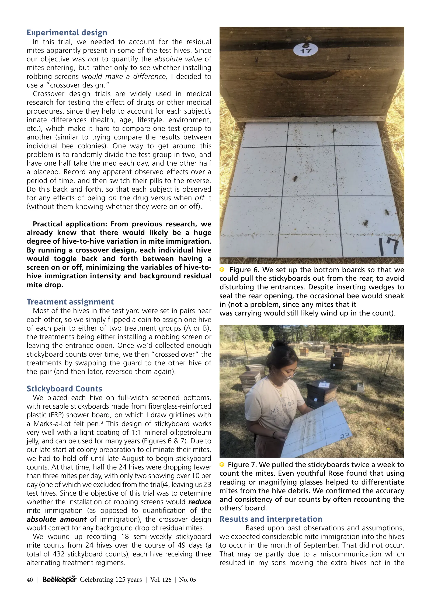

Experimental design
In this trial, we needed to account for the residual
mites apparently present in some of the test hives. Since
our objective was not to quantify the absolute value of
mites entering, but rather only to see whether installing
robbing screens would make a difference, I decided to
use a “crossover design.”
Crossover design trials are widely used in medical
research for testing the effect of drugs or other medical
procedures, since they help to account for each subject’s
innate differences (health, age, lifestyle, environment,
etc.), which make it hard to compare one test group to
another (similar to trying compare the results between
individual bee colonies). One way to get around this
problem is to randomly divide the test group in two, and
have one half take the med each day, and the other half
a placebo. Record any apparent observed effects over a
period of time, and then switch their pills to the reverse.
Do this back and forth, so that each subject is observed
for any effects of being on the drug versus when off it
(without them knowing whether they were on or off).
Practical application: From previous research, we
already knew that there would likely be a huge
degree of hive-to-hive variation in mite immigration.
By running a crossover design, each individual hive
would toggle back and forth between having a
screen on or off, minimizing the variables of hive-to-
hive immigration intensity and background residual
mite drop.
Treatment assignment
Most of the hives in the test yard were set in pairs near
each other, so we simply flipped a coin to assign one hive
of each pair to either of two treatment groups (A or B),
the treatments being either installing a robbing screen or
leaving the entrance open. Once we’d collected enough
stickyboard counts over time, we then “crossed over” the
treatments by swapping the guard to the other hive of
the pair (and then later, reversed them again).
Stickyboard Counts
We placed each hive on full-width screened bottoms,
with reusable stickyboards made from fiberglass-reinforced
plastic (FRP) shower board, on which I draw gridlines with
a Marks-a-Lot felt pen.3 This design of stickyboard works
very well with a light coating of 1:1 mineral oil:petroleum
jelly, and can be used for many years (Figures 6 & 7). Due to
our late start at colony preparation to eliminate their mites,
we had to hold off until late August to begin stickyboard
counts. At that time, half the 24 hives were dropping fewer
than three mites per day, with only two showing over 10 per
day (one of which we excluded from the trial)4, leaving us 23
test hives. Since the objective of this trial was to determine
whether the installation of robbing screens would reduce
mite immigration (as opposed to quantification of the
absolute amount of immigration), the crossover design
would correct for any background drop of residual mites.
We wound up recording 18 semi-weekly stickyboard
mite counts from 24 hives over the course of 49 days (a
total of 432 stickyboard counts), each hive receiving three
alternating treatment regimens.
Results and interpretation
Based upon past observations and assumptions,
we expected considerable mite immigration into the hives
to occur in the month of September. That did not occur.
That may be partly due to a miscommunication which
resulted in my sons moving the extra hives not in the
Figure 6. We set up the bottom boards so that we
could pull the stickyboards out from the rear, to avoid
disturbing the entrances. Despite inserting wedges to
seal the rear opening, the occasional bee would sneak
in (not a problem, since any mites that it
was carrying would still likely wind up in the count).
Figure 7. We pulled the stickyboards twice a week to
count the mites. Even youthful Rose found that using
reading or magnifying glasses helped to differentiate
mites from the hive debris. We confirmed the accuracy
and consistency of our counts by often recounting the
others’ board.
40 |
Celebrating 125 years | Vol. 126 | No. 05